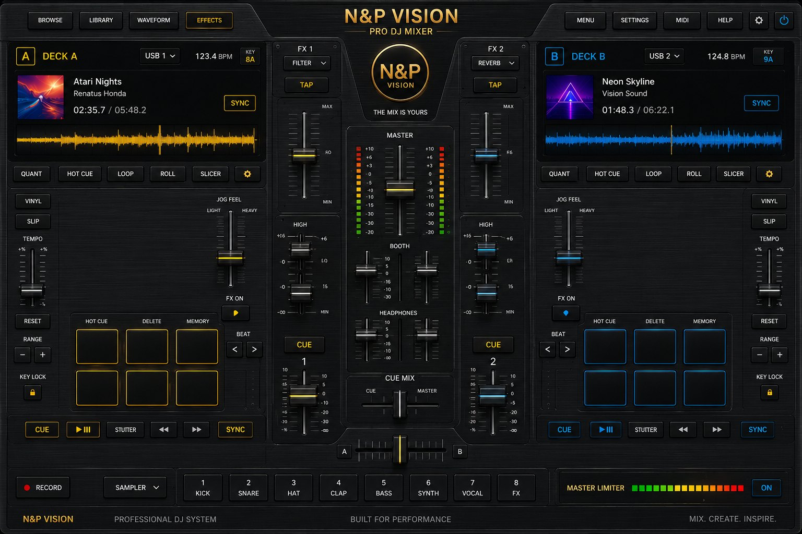

Pravidlo: ty jsi šéf. Vypnutí = podržet 1,6 s (proti přehmatu), zapnutí = 1 klik. Asistent hlídá jen techniku (gain cap 95 %, dojezd skladby, AUTOMAT = auto-crossfade).
USB 1 / USB 2 / obal skladby / BROWSE / LIBRARY → playlist decku (PŘIDAT, NAČÍST).
Ozubené kolo v řádku decku / EFFECTS → 10pásmový EQ decku.
HIGH-MID-LOW mini fadery u FX sloupců → rychlé EQ skupiny decku.
FX ON + velký FX fader → lowpass filtr decku (fader = frekvence).
Fader 1 / 2 → hlasitost decku · MASTER fader → celková hlasitost.
TEMPO po stranách ±8 % · RESET vynuluje · − / + jemný krok 0,5 % · KEY LOCK drží tóninu.
Waveform → klepnutím přeskočíš ve skladbě.
HOT CUE pady → 1. klep uloží bod, další klep skočí, podržení smaže. DELETE = mazací režim.
LOOP → 1. klep začátek, 2. klep konec+smyčka, 3. klep vypne.
TAP → vyťukej BPM · SYNC → srovná tempo podle druhého decku.
RECORD → nahrává master do souboru (2. klep uloží).
SETTINGS / ozubené kolo nahoře → asistent · MENU / vypínač → zpět do appky.
3× klep na logo N&P → zvýrazní hitzóny (kalibrace).